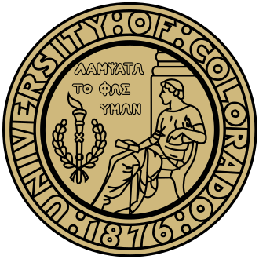
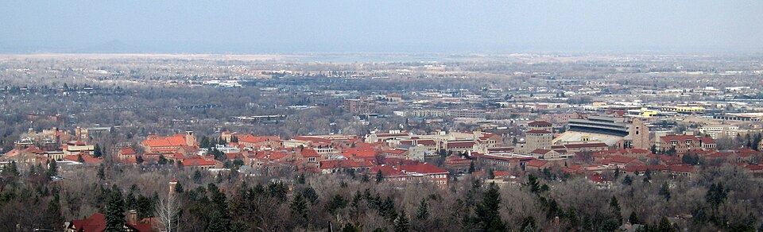
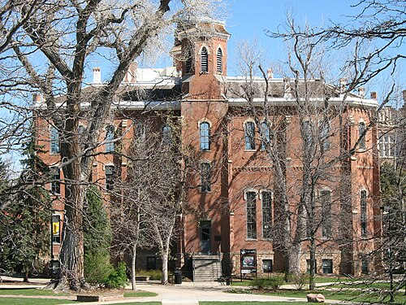
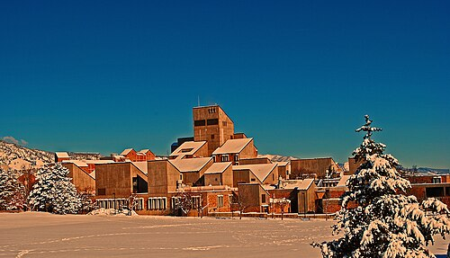
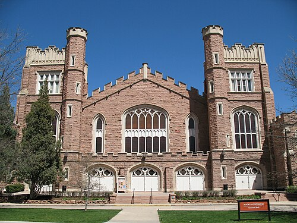
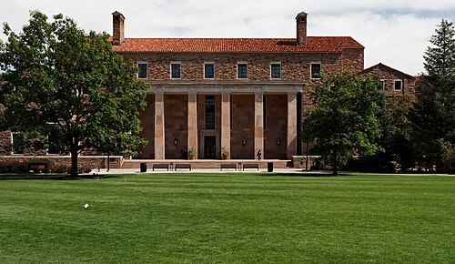
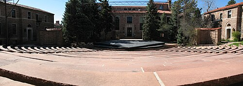
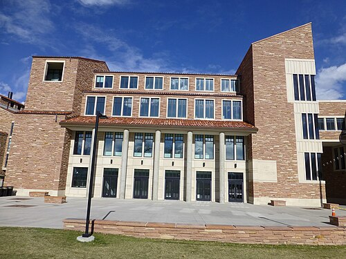
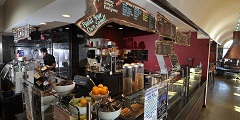
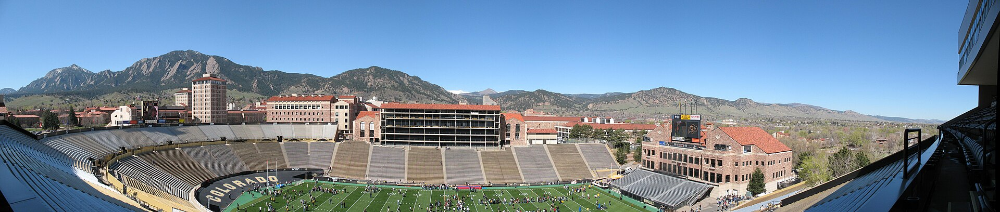

About the University

Overview

The University of Colorado Boulder (CU Boulder, CU, or Colorado) is a public research university in Boulder, Colorado. Founded in 1876, five months before Colorado became a state, it is the flagship of the University of Colorado system. It belongs to the Association of American Universities, holds the Carnegie “R1” research classification, and has been called a “Public Ivy.”
The university has nine colleges and schools and more than 150 academic programs. It is the only university in the world to have sent instruments to every planet in the Solar System. Alumni, faculty and researchers include 12 Nobel laureates, 10 Pulitzer Prize winners, 20 astronauts and 2 U.S. Supreme Court justices.
History
On March 14, 1876, the territorial legislature funded three institutions: the University of Colorado in Boulder, the Colorado School of Mines in Golden and the Colorado Agricultural College in Fort Collins. The cornerstone of Old Main was laid in 1875, and the doors opened on . Because few Colorado high schools could prepare students for university work, a preparatory school shared the campus; the first class had 15 college students and 50 preparatory students.
Milestones in access
- 1878: Mary Rippon becomes the first female professor.
- 1918: Lucile Berkeley Buchanan becomes the first African American woman to graduate.
- 1956: Charles H. Nilon becomes the first African American professor; his wife Mildred becomes the first African American librarian in 1962.
During World War II, CU was one of 131 institutions in the V-12 Navy College Training Program.
Campus
The main campus lies south of the Pearl Street Mall. The East Campus, about a quarter-mile away, holds athletic fields and research buildings. Travel + Leisure and Condé Nast Traveler have ranked it among the most beautiful campuses in the country.
Architecture
The distinctive Tuscan Vernacular Revival style was created by architect Charles Klauder. Early buildings such as Old Main and Macky Auditorium were Collegiate Gothic, but in 1919 Klauder shifted to rough sandstone walls, sloping red-tile roofs and Indiana limestone trim. This style guided fifteen buildings between 1921 and 1939 and is still followed today.

Residence halls
Students choose among 24 residence halls with 17 room types. Williams Village sits about 1.5 miles from the main campus and is served by a free bus. Residential Academic Programs offer in-dorm classes tied to interests such as international affairs or the environment.
Notable buildings
- Norlin Library
- Opened in 1940 and was Klauder’s last design. Its west face carries two inscriptions composed by President Norlin.
- Macky Auditorium
- A Neo-Gothic hall with two towers that seats 2,000 and opened in 1923, thirteen years after construction began, following a lawsuit over Andrew Macky’s estate. It hosts the Boulder Philharmonic, CU Opera and the Conference on World Affairs keynote.
- University Memorial Center (UMC)
- Opened in October 1953 as a memorial to Colorado servicemen. It became the center of 1960s and ’70s student activism, and its Alferd Packer Grill is named for a prospector accused of cannibalism.
- Center for Community (C4C)
- A 323,000-square-foot, $84.4 million facility completed in 2010. It houses student services, an underground garage and a 900-seat dining center.
- Recreation Center
- Built in 1973 with student fees, it includes a climbing gym, the only ice rink in Boulder proper and an outdoor pool shaped like the buffalo mascot.
- Mary Rippon Theatre
- An outdoor theater that hosts the Colorado Shakespeare Festival.


The Hill
University Hill, a college neighborhood, lies directly west of campus. Its main street, 13th Street, features a concert venue and the Fox Theatre.
Arts and Museums




The CU Art Museum holds a permanent collection of over 5,000 works, and a visual arts complex opened in 2010. The Museum of Natural History, housed in the Henderson building, has one of the most extensive collections in the Rocky Mountain and Plains regions. The CU Heritage Center in Old Main tells the university’s story, and the Fiske Planetarium features a 60-foot dome. The College of Music presents over 400 performances a year, and the Department of Theatre & Dance produces more than twenty shows annually.
Academics
Admissions
For the class entering in fall 2021, CU Boulder received 54,756 applications and accepted 43,576 (79.6%). Of those admitted, 6,785 enrolled, a yield of 15.6%. Freshman retention is 87%, and 74% graduate within six years.
| Measure | 2021 | 2020 | 2019 | 2018 |
|---|---|---|---|---|
| Applicants | 54,756 | 44,171 | 40,740 | 36,604 |
| Admits | 43,576 | 37,189 | 31,933 | 29,848 |
| Admit rate (%) | 79.6 | 84.2 | 78.4 | 81.5 |
| Enrolled | 6,785 | 6,326 | 7,113 | 6,700 |
| Yield rate (%) | 15.6 | 17.0 | 22.3 | 22.4 |
Colleges and schools
Arts and Sciences is by far the largest college. The others are Engineering and Applied Science, Environmental Design, Education, Music, Law, the Leeds School of Business, and Communication, Media, Design and Information. About 3,400 courses are offered in over 150 disciplines. The Law School is the smallest and most selective; the Wolf Law Building was dedicated in 2006 by Justice Stephen Breyer.
Honor code and honors programs
The university adopted an honor code in 2000, engraved on a plate in every classroom. The Honors Program, begun in 1931, admits the top ten percent of incoming freshmen and offers over 40 small classes each semester. The Presidents Leadership Class is a four-year leadership program for top scholars.
Rankings
U.S. News & World Report’s 2025 rankings placed CU Boulder tied for 97th among national universities and tied for 46th among public universities.
Research
Eleven research institutes support multidisciplinary work. Three stand out:
- Institute for Behavioral Genetics, founded in 1967, was the first post-World War II institute dedicated to behavioral genetics.
- Institute of Cognitive Science studies language, emotion and cognition and has a state-of-the-art fMRI system.
- ATLAS Institute blends engineering, computer science and robotics with design.
Others include JILA, LASP, INSTAAR, CIRES, BioFrontiers and RASEI.
Notable achievements
- First to create a Bose–Einstein condensate.
- First to observe a fermionic condensate.
- Developed the “FluChip” to diagnose respiratory illness.
- First place at the 2002 and 2005 U.S. Department of Energy Solar Decathlon.
- Created the Squid server under a National Science Foundation grant.
Student Life
The University of Colorado Student Government has executive, legislative and judicial branches, a $36.6 million budget, and oversight of over 120 student groups. Among the many organizations:
- Hiking Club, founded in 1919, is the oldest student group.
- Boulder Freeride, the ski and snowboard club, began in 1933.
- Cycling team, founded in 1983, has won multiple national titles, including both disciplines in 2005.
- CU Gaming, founded in 2015, has over 3,500 members.
- Program Council has brought acts such as The Rolling Stones and Pearl Jam.
- KVCU Radio 1190 is the college radio station.
About 13% of undergraduates take part in Greek life. In 2010, CU Boulder became the first fully student-run program to win the National Parliamentary Tournament of Excellence.
Athletics

The Colorado Buffaloes compete in NCAA Division I and rejoined the Big 12 in 2024 after leaving the Pac-12. The official colors are silver and gold, though black was substituted on uniforms. The teams were named the Buffaloes in 1934, and the university has won national titles in skiing, cross country and football. The school’s live mascot is a female American bison named Ralphie. Its in-state football rival is Colorado State in the Rocky Mountain Showdown, and Deion Sanders has coached the football team since 2023. CU also supports over 30 club teams.
People
Notable alumni
- Tsakhiagiin Elbegdorj, president of Mongolia
- Wiley Rutledge and Byron White, U.S. Supreme Court justices
- Scott Carpenter, Ellison Onizuka, Kalpana Chawla and Jack Swigert, astronauts
- Steve Wozniak, co-founder of Apple
- Trey Parker and Matt Stone, creators of South Park
- Robert Redford and Jonah Hill, actors
Faculty
Nobel laureates on the faculty include David Wineland, John Hall, Eric Cornell and Thomas Cech.
Recent chancellors
| Chancellor | Start | End |
|---|---|---|
| Richard L. Byyny | 1997 | April 30, 2005 |
| G.P. “Bud” Peterson | July 15, 2006 | March 31, 2009 |
| Philip P. DiStefano | May 5, 2009 | June 30, 2024 |
| Justin Schwartz | July 1, 2024 | Present |